Gamified Budget Box
A plywood savings box that tracks your weekly spending, with five servo-driven doors, a keypad, and an LCD. I led the mechanical design and fabrication for our team of 4.
- Role
- Mechanical design and fabrication lead
- Team
- 4 people
- Dates
- Jan–Apr 2026
- Tools
- AutoCAD, Adobe Illustrator, laser cutter, servos, Raspberry Pi Pico

Summary
I fabricated the box from plywood. It measures 18.5 × 8 × 12 in and cost $22.50 in materials. It has five magnetic doors that servos open and close, plus a keypad and an LCD. Our team went through three prototypes and made the box more durable along the way by reinforcing parts and fixing the servo calibration. The final build is painted black with green doors.
The idea was to turn a weekly budget into a game. You type what you spend into the keypad, the LCD shows a progress bar, and you earn points and a title like “Budget Boss.”
Problem
A lot of college students overspend. Impulse purchases, stress, and peer pressure all play a part, and so does not seeing the long-term cost. The usual fixes are strict budgets, financial literacy courses, and paying in cash. All of them depend on self-control, and none of them hold anyone accountable.
We wanted a device that made spending visible and kept people engaged without shaming them or touching their bank accounts. Our research on gamification drew on self-determination theory, which centers on autonomy, competence, and relatedness. It pointed us toward streaks, progress bars, and personal improvement instead of harsh competition.
Design
Most payments are digital now, so a box for cash would only see part of your spending. We thought about building an app, but none of us had much web development experience. So we went with an ATM-style box, because people already know how to use one. You enter each purchase on the keypad.
At about 18.5 × 8 × 12 in, the box fits standard US bills and leaves enough leverage for the pulley system. There are five compartments, one for each business day. Yarn ties each door to a servo-driven pulley, so pressing a button opens or closes it.
I designed the box’s dovetail joints in AutoCAD to keep it rigid. The electronics are a Raspberry Pi Pico, servos, buttons, an LCD, and a keypad. You can see the AutoCAD panel layouts in the gallery below.

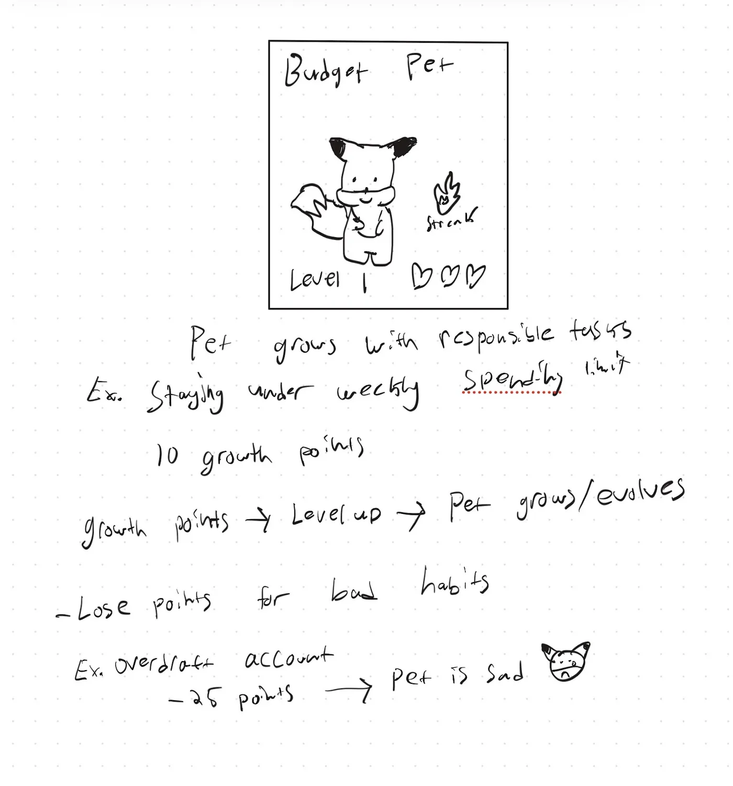

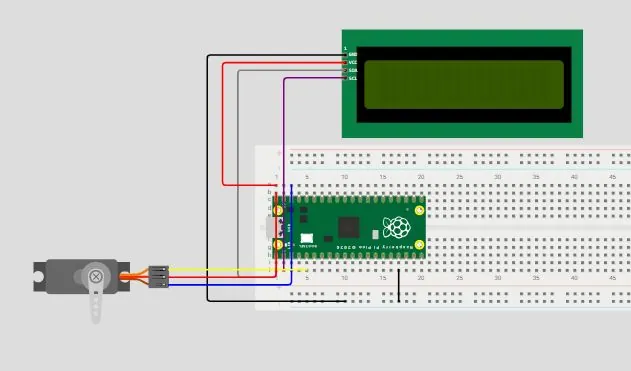

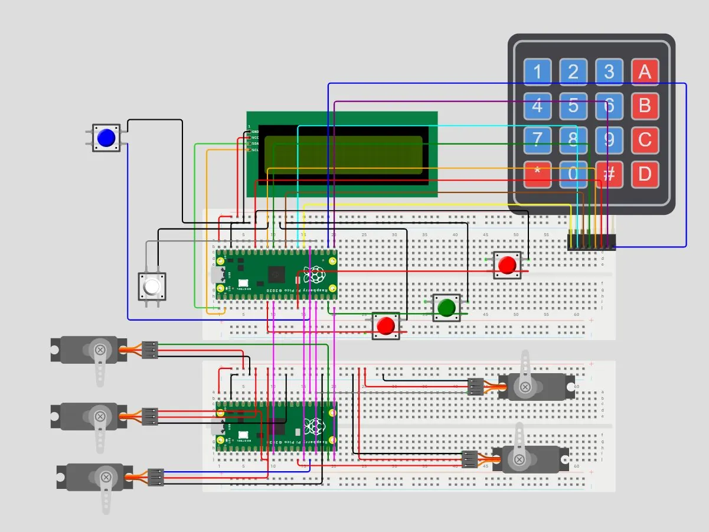
Build
The box is 1/8 in plywood, cut from ten sheets, five at 12 × 12 in and five at 12 × 24 in. I prepared the cut files in Adobe Illustrator and put the box together with wood glue and hot glue.
- Laser cut the panels and doors, along with the openings and mounts for the buttons, servos, keypad, and LCD.
- Stacked two boxes, with the electronics and servos in the top one and a divider for each day in the bottom bay.
- Fitted 5 servo-driven doors, each held closed by magnets.
- Painted the exterior black and the five doors green.

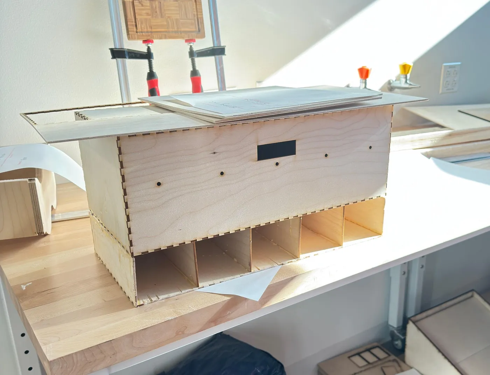

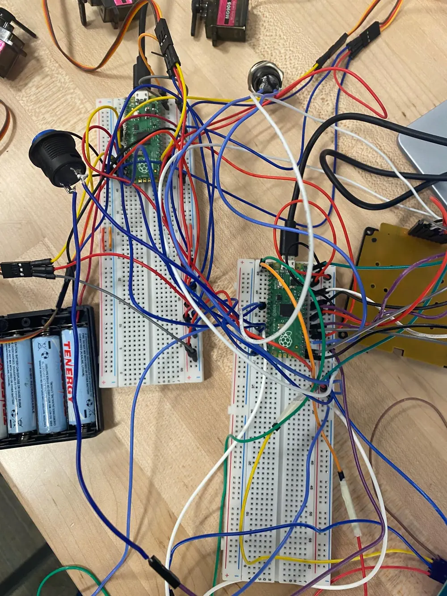

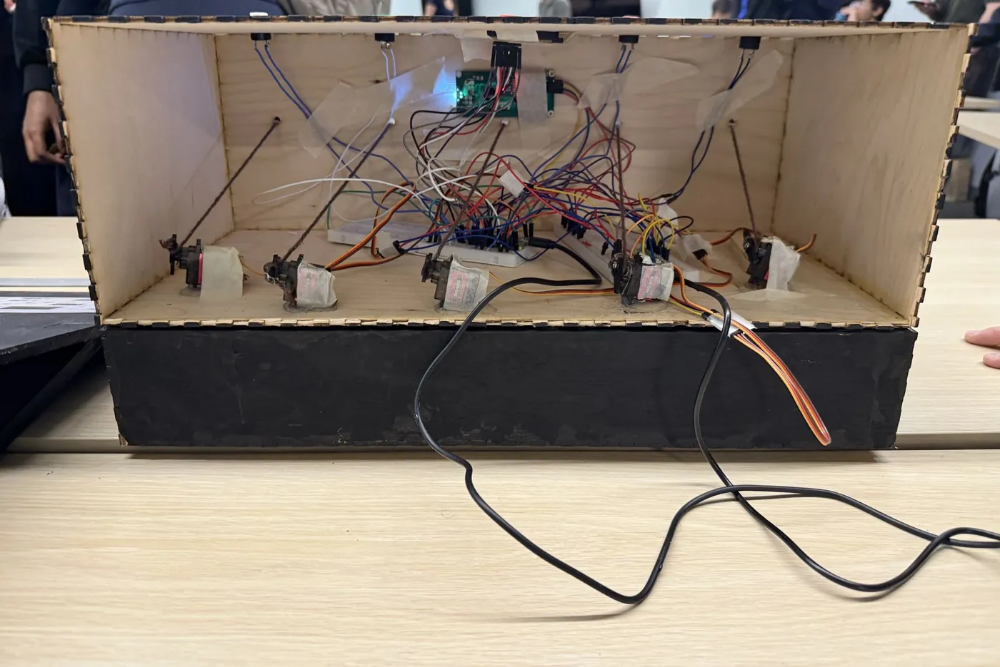

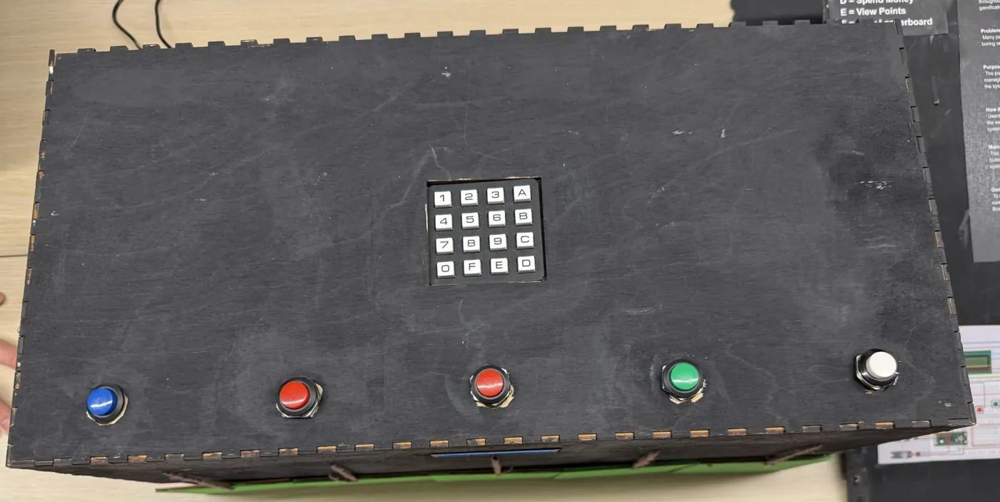
Testing and iteration
- Prototype 1, cardboard. Servos pulled strings to raise and lower the doors, but amounts had to be typed into a command window. Testers were confused by all the letter keys and asked for a physical keypad.
- Prototype 2, laser-cut plywood. We added the keypad, a button for each door, magnets, and the LCD. This time testers pointed out that the keypad wasn’t anchored well, the yarn was likely to fray, and the doors didn’t always rise or drop all the way. They also didn’t know how to use the box.
- Final. We glued and reinforced the keypad and other high-use parts, fixed the servo calibration, added an instruction poster, and painted the exterior.

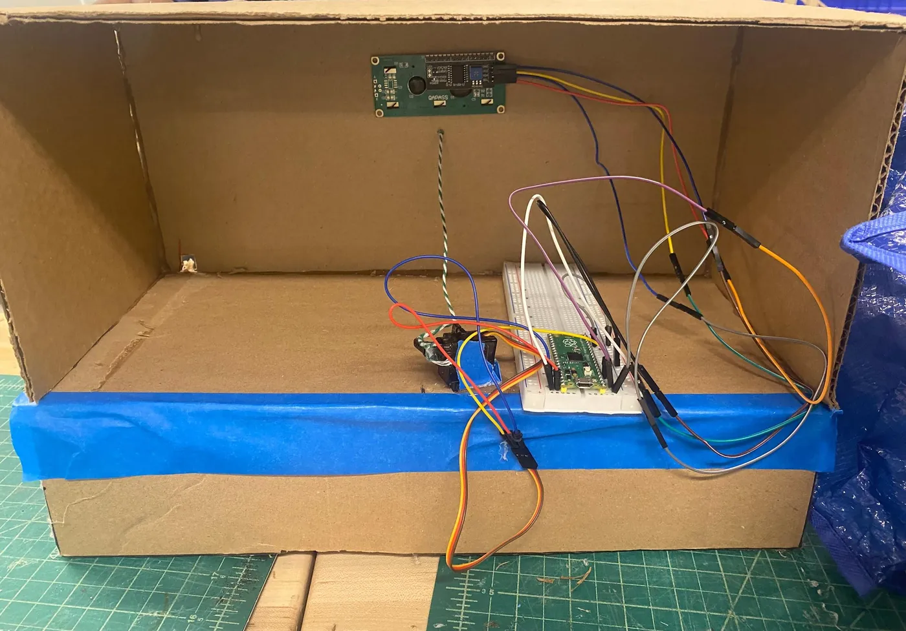
Early testers also asked for a way to put unused money back into the box, and warned that the yarn would fray over time. Swapping in a stronger line would be the next step.
Results
- Box size: 18.5 × 8 × 12 in
- Material cost: $22.50
- Doors: 5, servo-driven, magnetic
- Prototypes: 3
- At the expo, a board listing each keypad command let visitors follow along, so we didn’t have to explain everything from scratch.
What I’d change
If I did it again, I’d build it as an app. I’m interested in web and app development, and I’m now building one, Optimized Learning, an AI study app.
For the next expo, we’d make a bigger, more colorful poster with clearer visuals and add more interactive elements so the box stands out sooner.
Gallery
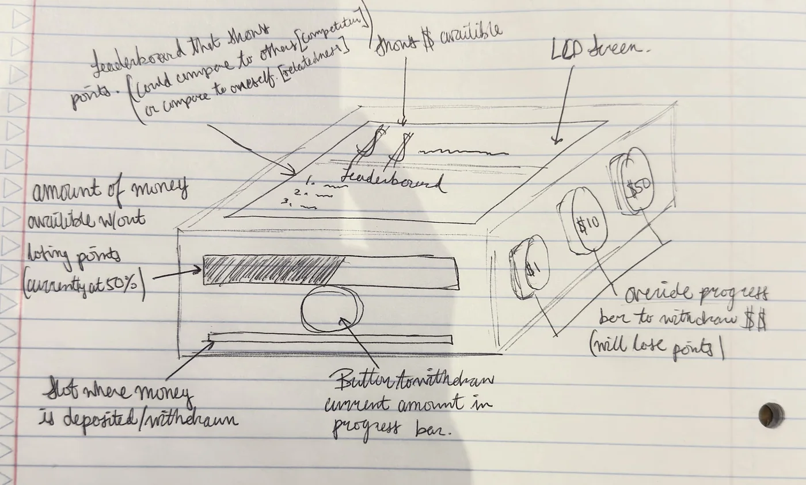
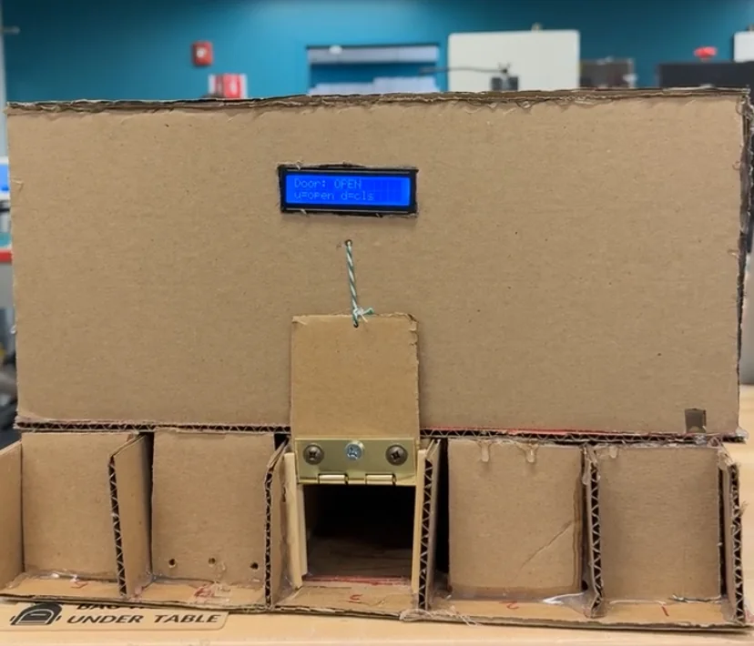
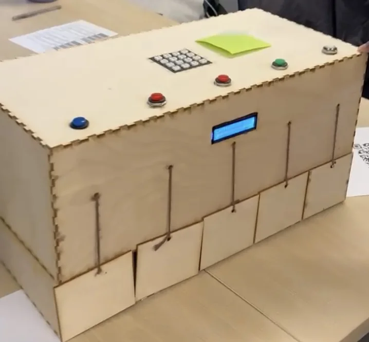